The goal of this lesson is for students to understand that we can generally approach \(p + x = q\) by subtracting the same thing from each side and that we can generally approach \(px = q\) by dividing each side by the same thing. This is accomplished by considering what can be done to a hanger to keep it balanced.
Students are solving equations in this lesson in a different way than they did in the previous lessons. They are reasoning about things one could “do” to hangers while keeping them balanced alongside an equation that represents a hanger, so they are thinking about “doing” things to each side of an equation, rather than simply thinking “what value would make this equation true.”
SubsubsecciónCalentamiento (10 mins)
Tiempo recomendado.
10 minutos
Narrativa.
[@@@@@@@]
Students encounter and reason about a concrete situation, hangers with equal and unequal weights on each side. They then see diagrams of balanced and unbalanced hangers and think about what must be true and false about the situations. In subsequent activities, students will use the hanger diagrams to develop general strategies for solving equations.
Lanzamiento.
[@@@@@@@]
Display the photo of socks and ask students, “What do you notice? What do you wonder?”
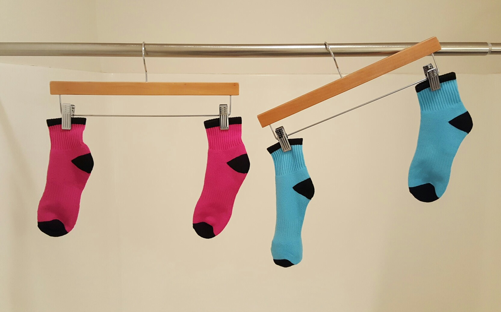
Give students 1 minute to think about the picture. Record their responses for all to see.
Things students may notice:
There are two pink socks and two blue socks.
The socks are clipped to either ends of two clothes hangers. The hangers are hanging from a rod.
The hanger holding the pink socks is level; the hanger holding the blue socks is not level.
Things students may wonder:
Why is the hanger holding the blue socks not level?
Is something inside one of the blue socks to make it heavier than the other sock?
What does this picture have to do with math?
Use the word “balanced” to describe the hanger on the left and “unbalanced” to describe the hanger on the right. Tell students that the hanger on the left is balanced because the two pink socks have an equal weight, and the hanger on the right is unbalanced because one blue sock is heavier than the other. Tell students that they will look at a diagram that is like the photo of socks, except with more abstract shapes, and they will reason about the weights of the shapes.
Give students 3 minutes of quiet work time followed by whole-class discussion.
Calentamiento9.Enganchados.
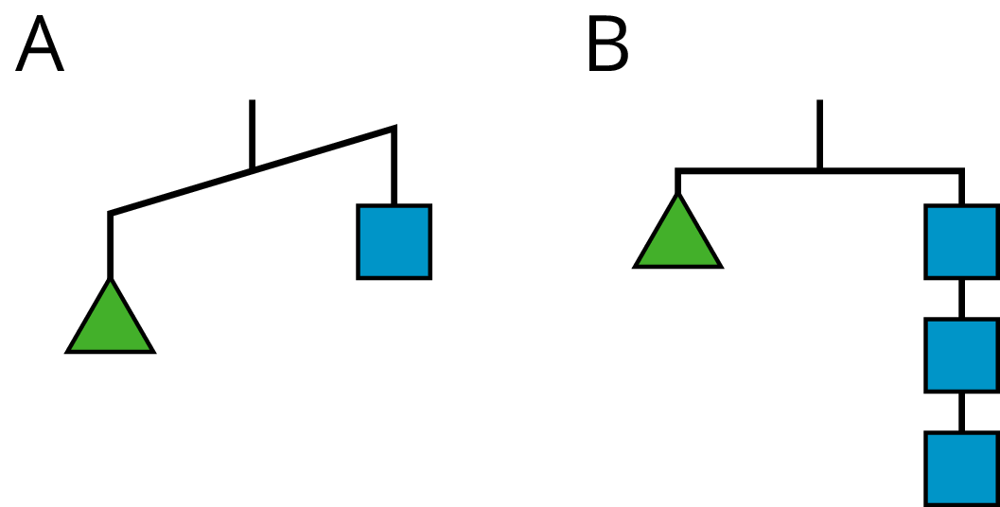
Para el Diagrama A, encuentra:
Algo que debe ser cierto
Algo que podría ser cierto o falso
Algo que no puede ser cierto
Para el Diagrama B, encuentra:
Algo que debe ser cierto
Algo que podría ser cierto o falso
Algo que no puede ser cierto
Solución.
[@@@@@@@]
Answers vary. Sample responses:
Diagram A:
The triangle is heavier than the square.
The triangle could weigh 10 ounces and the square could weigh 6 ounces.
The square and the triangle weigh the same.
Diagram B:
One triangle weighs the same as three squares.
The triangle weighs three pounds and each square weighs one pound.
One square is heavier than the triangle.
Síntesis de la actividad.
[@@@@@@@]
Ask students to share some things that must be true, could be true, and cannot possibly be true about the diagrams. Ask them to explain their reasoning. The purpose of this discussion is to understand how the hanger diagrams work. When the diagram is balanced, there is equal weight on each side. For example, since diagram B is balanced, we know that one triangle weighs the same as three squares. When the diagram is unbalanced, one side is heavier than the other. For example, since diagram A is unbalanced, we know that one triangle is heavier than one square.
SubsubsecciónActividad 1 (15 mins)
Tiempo recomendado.
15 minutos
Narrativa.
[@@@@@@@]
Students are presented with four hanger diagrams and are asked to match an equation to each hanger. They analyze relationships and find correspondences between the two representations. Then students use the diagrams and equations to find the unknown value in each diagram. This value is a solution of the equation.
Notice that the hangers (and equations) for \(x\) and \(z\) are identical except that the variable appears on alternate sides of the equal sign. It may be obvious to some students that \(3z = 6\) and \(6 = 3x\) mean the same thing mathematically, but we know that in grade 6 many students do not have a well-developed understanding of what the equal sign means. So it is worth spending a little time to make explicit that these equations each have the solution \(2\text{.}\) When we are writing an equation, it means the same thing if the two sides are swapped. Generally, \(a = b\) means the same thing as \(b = a\) where \(a\) and \(b\) represent any mathematical expression.
Lanzamiento.
[@@@@@@@]
Display the diagrams and explain that each square labeled with a 1 weighs 1 unit, and each shape labeled with a letter has an unknown weight.
Arrange students in groups of 2. Give 5–10 minutes of quiet work time and time to share their responses with a partner, followed by a whole-class discussion.
Actividad10.Emparejemos ecuaciones y diagramas.
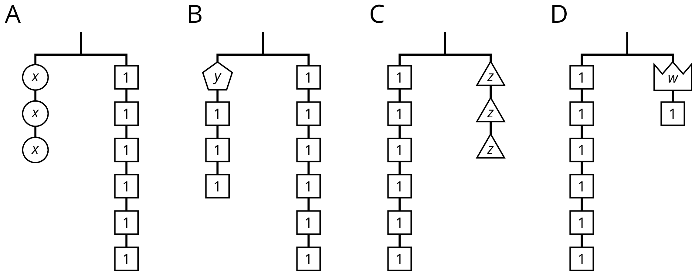
Empareja cada colgador con una ecuación. Completa la ecuación escribiendo \(x\text{,}\)\(y\text{,}\)\(z\) o \(w\) en la caja vacía.
\(\boxed{\phantom{3}} + 3 = 6\)
\(3 \boldcdot \boxed{\phantom{3}} = 6\)
\(6 =\boxed{\phantom{3}} + 1\)
\(6 = 3 \boldcdot \boxed{\phantom{3}}\)
Encuentra una solución para cada ecuación. Usa los colgadores para explicar lo que significa cada solución.
A: \(x\) is \(2\text{,}\) each circle weighs the same as \(2\) squares. B: \(y\) is \(3\text{,}\) the pentagon weighs as much as \(3\) squares. C: \(z\) is \(2\text{,}\) the \(z\) shape weighs the same as \(2\) squares. D: \(w\) is \(5\text{,}\) the \(w\) shape weighs as much as \(5\) squares.
Síntesis de la actividad.
[@@@@@@@]
Demonstrate two specific things for these specific examples: grouping the shapes on each side, and removing shapes from each side. In each case, the solution represents the weight of one shape. When you are done demonstrating, your diagrams might look like this:
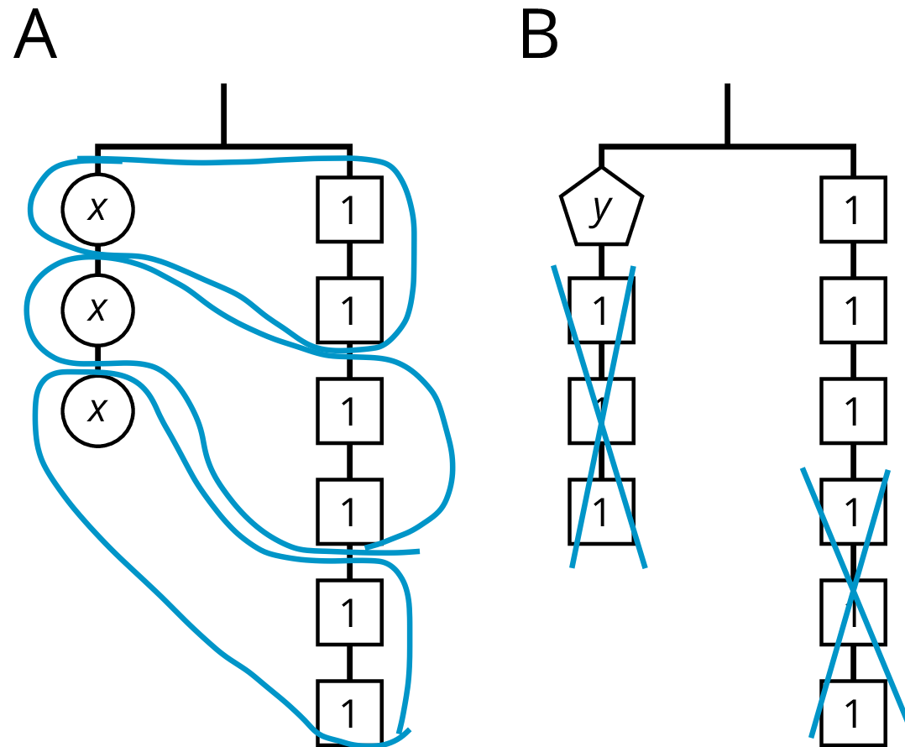
Consider asking some of the following questions:
“Explain how you know from looking at a hanger that it can be represented by an equation involving addition.”
“Explain how you know from looking at a hanger that it can be represented by an equation involving multiplication.”
“What are some moves that ensure that a balanced hanger stays balanced?”
Desarrollo de lenguaje matemático.
[@@@@@@@]
Conversing, Representing, Writing: MLR2 Collect and Display. While pairs are working, circulate and listen to student talk about the hangers and the equations. Write down common phrases and terms you hear students say about each representation (e.g., level, equal, the same as, balanced, tilted, more than, less than, unbalanced, grouping). Write the students’ words with the matched representation on a visual display and refer to it during the synthesis. This will help students connect everyday words and mathematical language for use during their paired and whole-group discussions.
Design Principle(s): Support sense-making
SubsubsecciónActividad 2 (15 mins)
Tiempo recomendado.
15 minutos
Narrativa.
[@@@@@@@]
This activity continues the work of using a balanced hanger to develop strategies for solving equations. Students are presented with balanced hangers and are asked to write equations that represent them. They are then asked to explain how to use the diagrams, and then the equations, to reason about a solution. Students notice the structure of equations and diagrams and find correspondences between them and between solution strategies.
Lanzamiento.
[@@@@@@@]
Draw students’ attention to the diagrams in the task statement. Ensure they notice that the hangers are balanced and that each object is labeled with its weight. Some weights are labeled with numbers but some are unknown, so they are labeled with a variable.
Keep students in the same groups. Give 5–10 minutes of quiet work time and time to share their responses with a partner, followed by a whole-class discussion.
Actividad11.Conectar diagramas con ecuaciones y soluciones.
Estos son algunos diagramas de colgador balanceados en los que cada pieza está etiquetada con su peso.
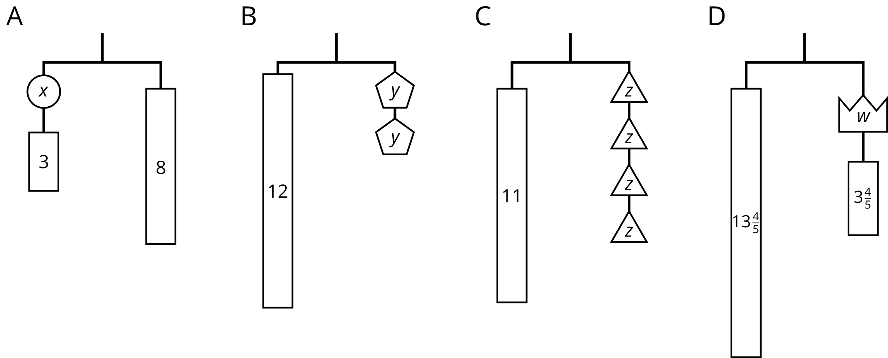
Para cada diagrama:
Escribe una ecuación.
Explica cómo razonar usando el diagrama para hallar el peso de una pieza etiquetada con una letra.
Explica cómo razonar usando la ecuación para hallar el peso de una pieza etiquetada con una letra.
\(x = 5\text{.}\) Together \(x\) and \(3\) weigh \(8\text{,}\) so \(x\) weighs \(5\text{.}\)
\(y = 6\text{.}\)\(12\) is twice the weight of \(y\text{,}\) so \(y\) weighs half of \(12\text{.}\)
\(z = \frac{11}{4}\text{.}\)\(11\) is \(4\) times the weight of \(z\text{,}\) so \(z\) weighs a quarter of \(11\text{.}\)
\(w = 10\text{.}\) Together \(w\) and \(3\frac{4}{5}\) weight \(13\frac{4}{5}\text{,}\) so \(w\) weighs \(10\text{.}\)
Síntesis de la actividad.
[@@@@@@@]
Invite students to demonstrate, side by side, how they reasoned with both the diagram and the equation. For example, diagram A can be shown next to the equation \(x + 3 = 8\text{.}\) Cross out a piece representing 3 from each side, and write \(x + 3 - 3 = 8 - 3\text{,}\) followed by \(x = 5\text{.}\) Repeat for all four diagrams. For the diagrams represented by a multiplication equation, show dividing each side into equal-sized groups.
We want students to walk away with two things:
An instant recognition of the structure of equations of the form \(x + p = q\) and \(px = q\) where \(p\) and \(q\) are specific, given numbers.
A visual representation in their mind that can be used to support understanding of why for equations of the form \(x + p = q\text{,}\) you can subtract \(p\) from both sides, and for equations of the form \(px = q\text{,}\) you can divide both sides by \(p\) to find the solution.
Desarrollo de lenguaje matemático.
[@@@@@@@]
Representing, Listening, Speaking: MLR7 Compare and Connect. Use this routine to help students consider audience when preparing to share their work. Ask students to prepare a visual display that shows their reasoning about the diagram and equation. Some students may wish to add notes or details to their displays to help communicate their thinking. Invite students to share their displays with a partner, and discuss “What is the same and what is different?” Listen for the ways students describe the correspondences between the structures of the equations and diagrams, and between their solution strategies. This will help students use mathematical language to connect equations with diagrams during the synthesis.
Representation: Internalize Comprehension. Demonstrate and encourage students to use color coding and annotations to highlight connections between representations. See activity synthesis from the previous activity for an example.
When you have the time, visit the site https://solveme.edc.org/Mobiles.html to solve some trickier puzzles that use hanger diagrams like the ones in this lesson. You can even build new ones. (If you want to do this during class, check with your teacher first!)
SubsubsecciónSíntesis de la lección (15 mins)
[@@@@@@@]
Display the two equations \(5x = 8\) and \(5 + x = 8\text{.}\) Ask students to draw a hanger to match each equation. Then have them work with a partner to solve the equation alongside finding the unknown value on the hanger. Ask students to compare the two strategies and discuss how they are alike and how they are different.
Preguntas de comprensiónActividad de cierre (5 mins)
Escribe una ecuación que represente a este colgador.
Encuentra el peso de un círculo. Muestra o explica cómo lo encontraste.
Solución.
\(\displaystyle 4w = 25\)
\(\frac{25}{4}\) o \(6\frac{1}{4}\)
Acciones para apoyar el aprendizaje.
[@@@@@@@]
Students will have more opportunities to understand the mathematical ideas in this cool-down, so there is no need to slow down or add additional work to the next lessons. Instead, use the results of this cool-down to provide guidance for what to look for and emphasize over the next several lessons to support students in advancing their current understanding.
ReferenciasResumen de la lección (para los estudiantes)
Un colgador está balanceado cuando el peso en ambos lados es el mismo. Podemos cambiar los pesos y el colgador se mantendrá balanceado siempre y cuando el cambio sea igual en ambos lados. Por ejemplo, si se agregan 2 libras a cada lado de un colgador balanceado, este se mantendrá balanceado. Al quitar la mitad del peso de cada lado, también se mantendrá balanceado.
Una ecuación se puede asociar con un colgador balanceado. Podemos cambiar la ecuación, pero para que una ecuación verdadera siga siendo verdadera, debe hacerse lo mismo a los dos lados del signo igual. Si sumamos o restamos el mismo número a cada lado, o si multiplicamos o dividimos por la misma cantidad a cada lado, la ecuación nueva seguirá siendo verdadera.
Esta forma de pensar nos puede ayudar a encontrar soluciones a ecuaciones. En vez de revisar diferentes valores, podemos pensar en restar la misma cantidad de cada lado o en dividir cada lado entre el mismo número.
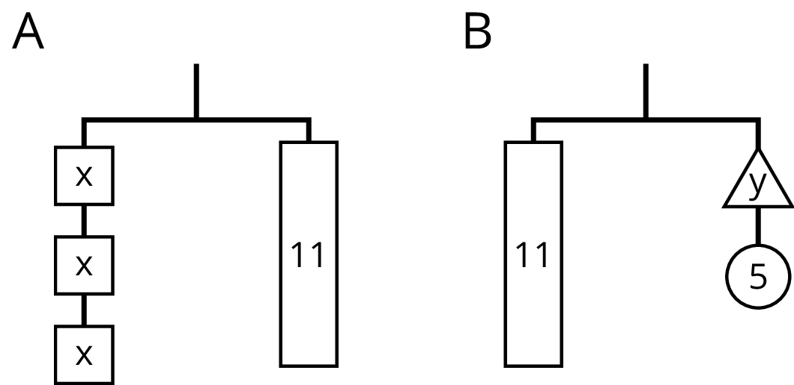
El Diagrama A se puede representar con la ecuación \(3x = 11\text{.}\)
El Diagrama B se puede representar con la ecuación \(11 = y + 5\text{.}\)
Si partimos el \(11\) en \(3\) partes iguales, cada parte tendrá el mismo peso que un bloque con una \(x\text{.}\)
Si quitamos un peso de \(5\) de cada lado del colgador, este seguirá balanceado.
Separar cada lado del colgador en \(3\) partes iguales es lo mismo que dividir entre \(3\) cada lado de la ecuación.
Quitar \(5\) de cada lado del colgador es lo mismo que restar \(5\) a cada lado de la ecuación.
\(3x\) dividido entre \(3\) es igual a \(x\text{.}\)
\(11\) dividido entre \(3\) es \(\frac{11}{3}\text{.}\)
Si \(3x = 11\) es verdadera, entonces \(x = \frac{11}{3}\) es verdadera.
La solución de \(3x = 11\) es \(\frac{11}{3}\text{.}\)
\(11 - 5\) es \(6\text{.}\)
\(y + 5 - 5\) es \(y\text{.}\)
Si \(11 = y + 5\) es verdadera, entonces \(6 = y\) es verdadera.
La solución de \(11 = y + 5\) es \(6\text{.}\)
EjerciciosProblemas de práctica de la lección
Relacionados con aprendizajes de esta lección o de lecciones anteriores.
1.
Selecciona todas las ecuaciones que representen el colgador.
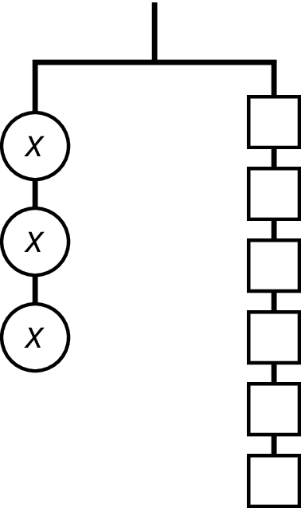
\(\displaystyle x + x + x = 1 + 1 + 1 + 1 + 1 + 1\)
\(\displaystyle x \boldcdot x \boldcdot x = 6\)
\(\displaystyle 3x = 6\)
\(\displaystyle x + 3 = 6\)
\(\displaystyle x \boldcdot x \boldcdot x = 1 \boldcdot 1 \boldcdot 1 \boldcdot 1 \boldcdot 1 \boldcdot 1\)
Solución.
A, C
2.
Escribe una ecuación para representar cada colgador.
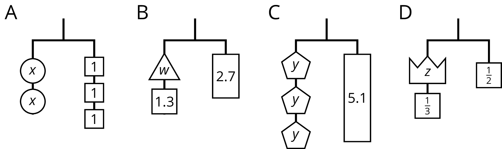
Solución.
\(2x = 3\) (o algo equivalente)
\(w + 1.3 = 2.7\) (o algo equivalente)
\(3y = 5.1\) (o algo equivalente)
\(z + \frac{1}{3} = \frac{1}{2}\) (o algo equivalente)
3.
Escribe una ecuación que represente el colgador.
Explica cómo se puede razonar con el colgador para hallar el valor de \(x\text{.}\)
Explica cómo se puede razonar con la ecuación para hallar el valor de \(x\text{.}\)
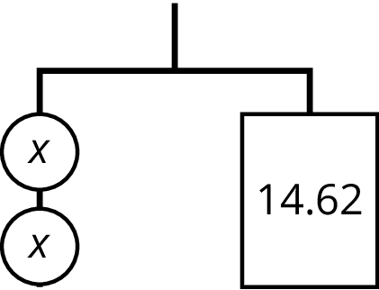
Solución.
[@@@@@@@]
\(\displaystyle 2x = 14.62\)
Each \(x\) can be grouped with half of the other side, so that means \(x\) is half of \(14.62\) or \(7.31\text{.}\)
4.
Andre dice que \(x\) es \(7\) porque él puede mover al otro lado los dos \(1\) que están con la \(x\text{.}\)
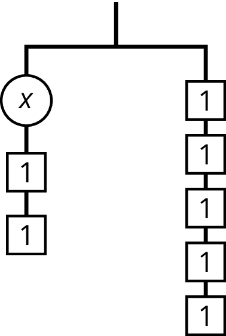
¿Estás de acuerdo con Andre? Explica tu razonamiento.
Solución.
[@@@@@@@]
Andre is not correct. Each \(1\) on the left balances with a 1 on the right. So taking away the two 1s on the left only leaves the hanger balanced if two 1s are removed on the right. This leaves \(x\) on the left and three 1s on the right, so \(x = 3\text{.}\)
5.
Empareja cada ecuación con uno de los diagramas.
\(\displaystyle 12 - m = 4\)
\(\displaystyle 12 = 4m\)
\(\displaystyle m - 4 = 12\)
\(\displaystyle \frac{m}{4} = 12\)
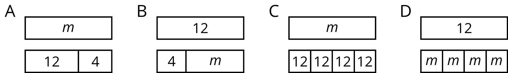
Solución.
\(12 - m = 4\) corresponde a B
\(12 = 4 \boldcdot m\) corresponde a D
\(m - 4 = 12\) corresponde a A
\(\frac{m}{4} = 12\) corresponde a C
6.
El área de un rectángulo es \(14\) unidades cuadradas. Este tiene longitudes de lado \(a\) y \(b\text{.}\) Dados los siguientes valores para \(a\text{,}\) determina \(b\text{.}\)
Lin debe ahorrar \(\$20\) para un nuevo juego. ¿Cuánto dinero tiene ahorrado si ya ha ahorrado los siguientes porcentajes de su meta? Explica tu razonamiento.
\(\displaystyle 25\%\)
\(\displaystyle 75\%\)
\(\displaystyle 125\%\)
Solución.
\(\displaystyle \$5\)
\(\displaystyle \$15\)
\(\displaystyle \$25\)
Hay varios razonamientos. Ejemplo de razonamiento: